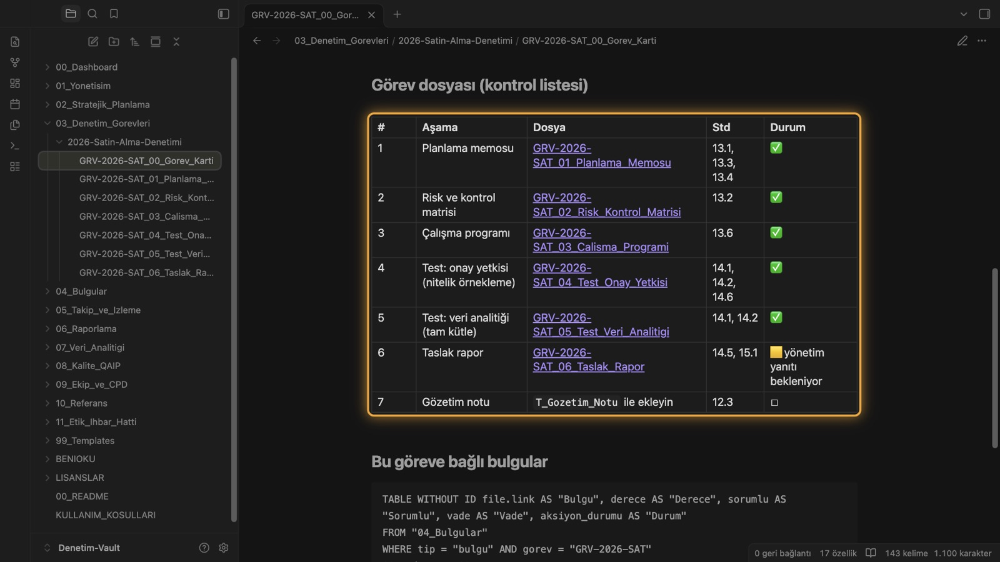
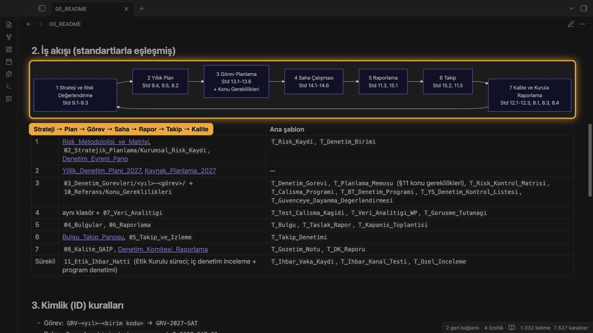
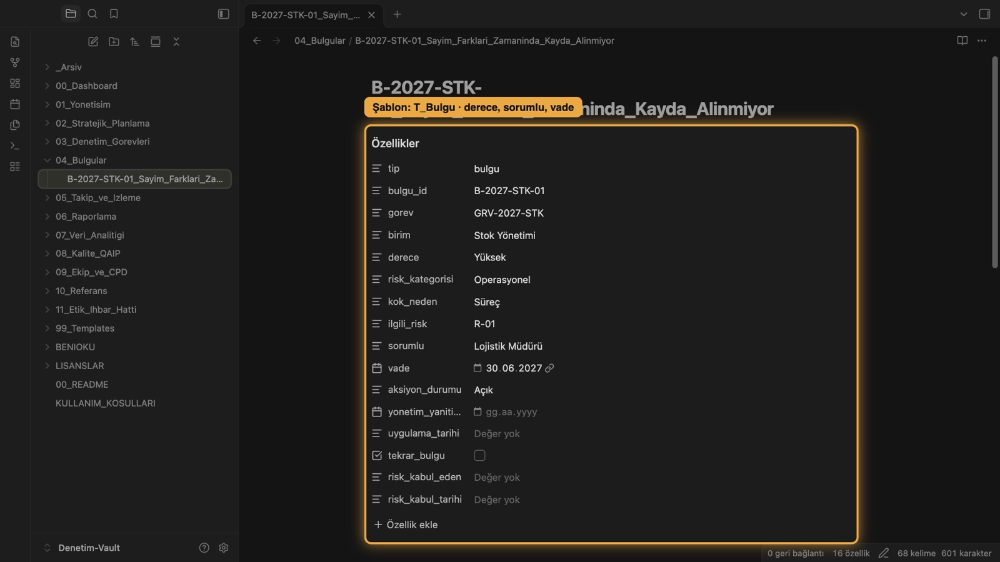
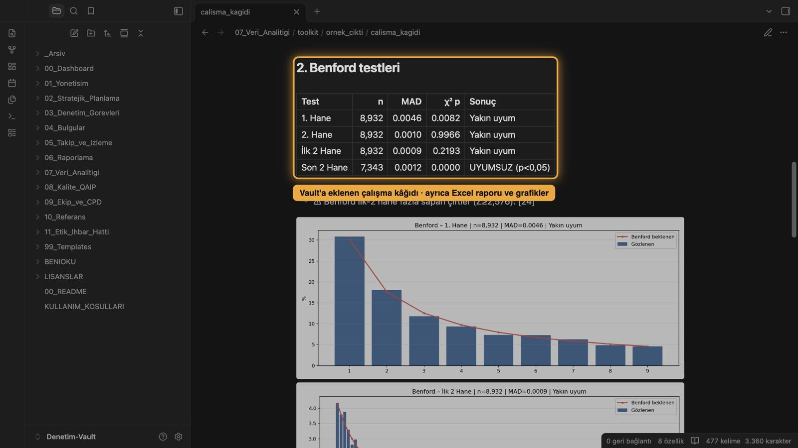

İç denetimin tamamı, tek bir düzenli çalışma ortamında Your whole internal audit practice in one organised workspace
IIA 2024 Küresel İç Denetim Standartlarına (GIAS) göre kurulmuş, kullanıma hazır Türkçe vault: 34 şablon, 28 kontrol kütüphanesi, canlı panolar ve Benford dahil veri analitiği araç seti. Bilgisayarınızda çalışır, verileriniz sizde kalır. A ready-to-use vault (in Turkish) built around the IIA 2024 Global Internal Audit Standards (GIAS): 34 templates, 28 control libraries, live dashboards and a data analytics toolkit including Benford tests. It runs on your own computer and your data stays with you.

Denetçiler, denetim yöneticileri ve CIA adayları içinFor auditors, audit leaders and CIA candidates
İç denetçilerInternal auditors
Her görevde aynı yapı: planlama memosu, risk-kontrol matrisi, test kâğıdı, 5C bulgu, rapor ve takip.The same structure on every engagement: planning memo, risk and control matrix, test workpapers, 5C findings, report and follow-up.
CAE'ler ve küçük ekiplerCAEs and small teams
Standart uyum haritası, risk bazlı plan ve kalite programı hazır. GIAS geçişini sıfırdan yazmak yerine uyarlayarak yaparsınız.Standards mapping, risk-based plan and quality programme are ready. You adapt your GIAS transition instead of writing it from scratch.
CIA adaylarıCIA candidates
Standartları uygulamada görürsünüz: her konu bir şablona ve uçtan uca örnek görev dosyasına bağlıdır.See the standards in practice: each topic links to a template and to an end-to-end sample engagement file.
Stratejiden takibe, denetimin her adımıEvery step from strategy to follow-up
- GIAS 2024'ün 52 standardı için uyum haritası ve Kurul / Temel Koşullar kontrol listesi
- Risk metodolojisi, 38 birimlik örnek denetim evreni, 31 risk, yıllık plan ve kapasite hesabı
- 34 şablon: görev kartından denetim komitesi raporuna
- 28 kontrol kütüphanesi: finans, satın alma, BT, KVKK, İSG ve sektörel (imalat, gıda, enerji, inşaat, akaryakıt, restoran…)
- Siber güvenlik ve üçüncü taraf riski için denetim soru listeleri
- Etik ihbar hattı modülü: politika, prosedür, sözleşme taslağı
- Python araç seti: Benford ve 11 analitik test, örnekleme, Excel çıktısı
- Uçtan uca örnek görev dosyası (kurgusal "Örnek Holding A.Ş.")
- Tek tıkla yeni denetim: klasör ve 7 belge kimlikleri dolu; kimlik kontrolü, geçmiş bulgular, denetimi kapatma ve yıl sonu arşivi
- Ana pano, risk, denetim evreni, bulgu takip ve plan gerçekleşme panoları
- Hızlı başlangıç rehberi, SSS; abonelikte tüm güncellemeler ve e-posta desteği
- Mapping for all 52 GIAS 2024 standards plus a Board / Essential Conditions checklist
- Risk methodology, a 38-unit sample audit universe, 31 risks, annual plan and capacity model
- 34 templates, from engagement card to audit committee report
- 28 control libraries: finance, procurement, IT, data protection, health & safety and sector-specific (manufacturing, food, energy, construction, fuel retail, restaurants…)
- Audit question lists for cybersecurity and third-party risk
- Ethics hotline module: policy, procedure and contract draft
- Python toolkit: Benford and 11 analytic tests, sampling, Excel output
- End-to-end sample engagement file (fictitious "Örnek Holding A.Ş.")
- One-click new engagement: folder and 7 workpapers with IDs pre-filled; ID check, prior findings, engagement close-out and year-end archive
- Main, risk, audit universe, findings tracker and plan-vs-actual dashboards
- Quick-start guide, FAQ, updates and e-mail support for the licence term
Ürünün kendisinden görüntülerTaken from the product itself
Arayüz Türkçedir. Örnek veriler kurgusaldır.The interface and content are in Turkish. Sample data is fictitious.



Satın alma sonrası 15 dakikada ilk görevYour first engagement 15 minutes after purchase
- Yıllık abonelik ya da süresiz lisans seçin. Lisans anahtarınız ve indirme bağlantınız e-postanıza gelir.Choose an annual subscription or a perpetual licence. Your licence key and download link arrive by e-mail.
- Ücretsiz Obsidian uygulamasını kurun (Windows, macOS, Linux).Install the free Obsidian app (Windows, macOS, Linux).
- İndirdiğiniz klasörü Obsidian'da açın; panolar için gereken eklenti pakette hazırdır.Open the downloaded folder in Obsidian; the plugin the dashboards need is included.
- Hızlı Başlangıç rehberini izleyerek ilk görevinizi oluşturun.Follow the Quick Start guide to create your first engagement.
Yıllık abonelik: güncellemeler ve destek dahilAnnual subscription: updates and support included
Abonelik her yıl otomatik yenilenir ve istediğiniz zaman iptal edilebilir. Abonelik yenilenmezse kullanım hakkı sona erer ve panolar kilitlenir; kendi notlarınız ve kayıtlarınız size aittir ve okunabilir kalır. Lisans en fazla 7 günde bir çevrimiçi doğrulanır (yalnızca lisans anahtarı ve vault kimliği gönderilir; 14 gün çevrimdışı çalışır).Subscriptions renew automatically each year and can be cancelled at any time. If not renewed, the right to use the vault ends and dashboards lock; your own notes and records remain yours and stay readable. The licence is checked online at most every 7 days (only the licence key and vault instance ID are sent; works offline for 14 days).
BireyselIndividual
- Örnek verili tam vaultFull vault with sample data
- En fazla 3 cihazda kullanımUse on up to 3 devices
- Abonelik süresince tüm güncellemelerAll updates during the subscription
- E-posta desteğiE-mail support
EkipTeam
- Boş (canlı kullanım) + örnekli vaultBlank (live use) + sample vault
- Kurulum ve eğitim notuSetup and training guide
- Kurum içi paylaşımlı depoda kullanımUse on your organisation's shared storage
- İsteğe bağlı ekip eğitimi (2 × 3 saat): $590Optional team training (2 × 3 hours): $590
KurumsalEnterprise
- Ekip paketinin tüm içeriğiEverything in Team
- 2 saat online kurulum oturumu2-hour online setup session
- Öncelikli destekPriority support
- İsteğe bağlı ekip eğitimi: $590Optional team training: $590
Süresiz tam lisans: tek seferlik, güncelleme hariçPerpetual licence: one-time, updates not included
Satın aldığınız sürümü süresiz kullanırsınız; yenileme gerekmez ve panolar kilitlenmez. Yeni sürümler ve destek dahil değildir; isterseniz yıllık güncelleme paketi alabilirsiniz: Bireysel $59 · Ekip $179 · Kurumsal $499 / yıl.Use the version you buy forever; no renewal needed and dashboards never lock. New versions and support are not included; an optional yearly update pack is available: Individual $59 · Team $179 · Enterprise $499 / year.
Fiyatlar ABD doları (USD) cinsindendir ve vergiler hariçtir; KDV/VAT ödeme sayfasında eklenir. Ödemeler, faturalama ve abonelik yenilemesi satıcı-of-record olarak Lemon Squeezy tarafından yapılır. Kurumsal alımlarda teklif ve TL fatura için bize yazın. Prices are in US dollars (USD) and exclude taxes; VAT is added at checkout. Payments, invoicing and subscription renewals are handled by Lemon Squeezy as merchant of record. For enterprise purchases with a quote and a Turkish invoice, contact us.
Sorular ve cevaplarQuestions and answers
Abonelik mi, süresiz lisans mı?Subscription or perpetual licence?
Yıllık abonelik: güncellemeler ve destek dahildir, her yıl otomatik yenilenir, istediğiniz an iptal edebilirsiniz. Yenilenmezse kullanım hakkı sona erer; kendi notlarınız ve kayıtlarınız size aittir ve okunabilir kalır. Süresiz tam lisans: tek seferlik ödenir, satın aldığınız sürümü süresiz kullanırsınız; güncelleme ve destek dahil değildir.Annual subscription: updates and support included, renews automatically each year, cancel any time. If not renewed, the right to use the vault ends; your own notes and records remain yours and stay readable. Perpetual licence: paid once, use the version you buy forever; updates and support not included.
Verilerim nereye gidiyor?Where does my data go?
Hiçbir yere. Vault bilgisayarınızdaki bir klasördür; biz erişmeyiz ve veri toplamayız.Nowhere. The vault is a folder on your computer; we have no access to it and collect no data from it.
IIA metinleri içeride mi?Does it contain IIA texts?
Hayır. Standartlara numara ve başlıkla atıf yapılır; içerik özgün uygulama materyalidir. Resmî metinler IIA'dan edinilmelidir.No. Standards are referenced by number and title; the content is original practice material. Official texts must be obtained from the IIA.
Sistem gereksinimleri neler?What are the system requirements?
Obsidian masaüstü uygulaması (Windows, macOS veya Linux; ücretsiz). Panolar için gereken Dataview eklentisi pakette hazırdır. Veri analitiği için isteğe bağlı olarak Python 3.10+.The Obsidian desktop app (Windows, macOS or Linux; free). The Dataview plugin used by the dashboards is included. Python 3.10+ is optional, for the analytics toolkit.
İade var mı?Can I get a refund?
Dijital içerik olduğu için indirme başladıktan sonra cayma hakkı yoktur. Paket açılmazsa veya eksikse yeniden gönderim yapılır; sorun çözülemezse ücret iade edilir. Ayrıntılar: İade Politikası.As this is digital content, the right of withdrawal ends once the download starts. If the package is faulty or incomplete we re-send it, and refund you if the problem cannot be fixed. Details: Refund Policy.
Soru, destek ve kurumsal teklifQuestions, support and enterprise quotes
E-posta:E-mail: yasarguvenates@gmail.com
Satıcı:Seller: Yaşar Güven Ateş (YGATES Stratejik Yönetim ve Danışmanlık)
Adres:Address: Antalya, Türkiye
Hedef yanıt süresi: 3 iş günü.Target response time: 3 business days.